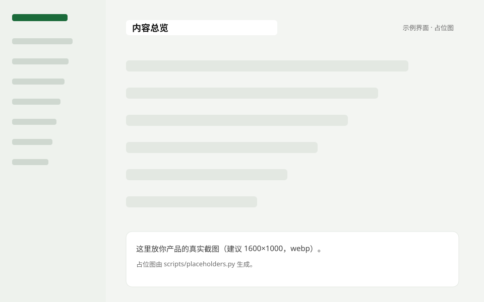
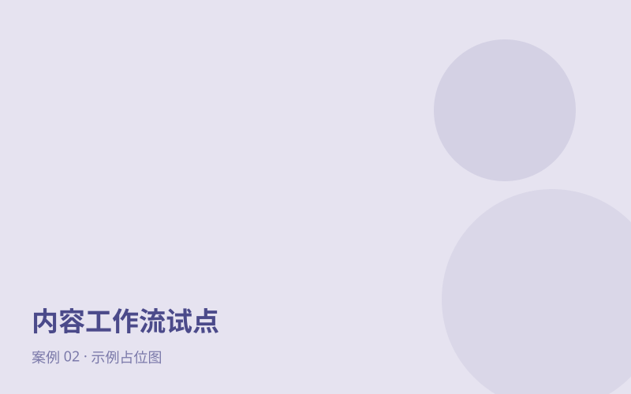
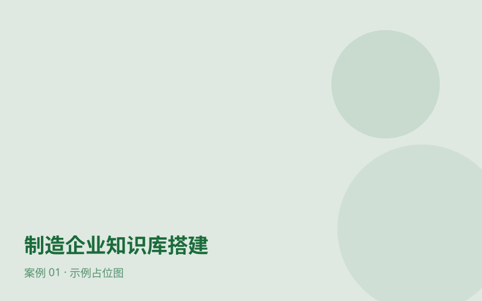
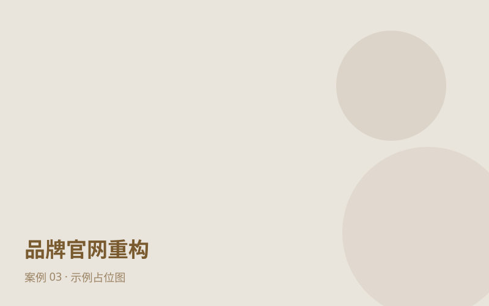
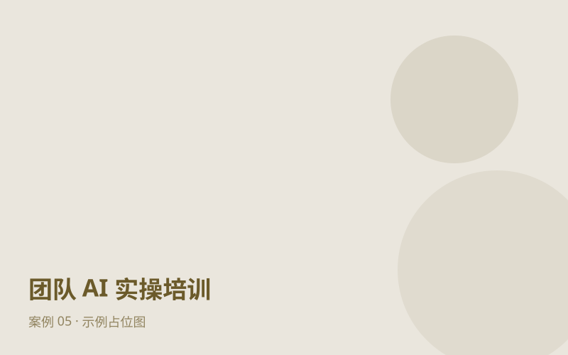
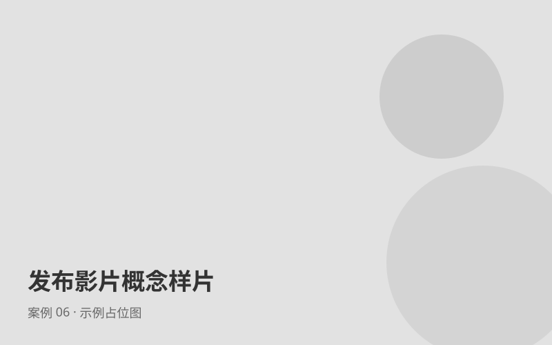
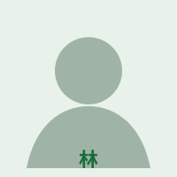
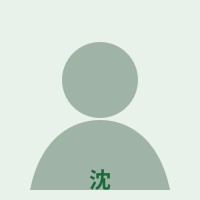
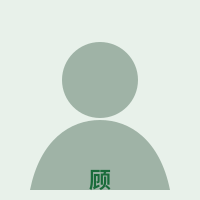
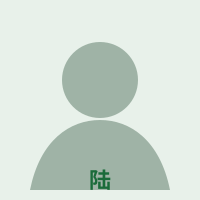

断点 01
重复解释
同一份资料，不同人重复问、重复说、重复整理。
我们的做法
把资料汇入有来源的企业知识库，回答回到原文。
对应：AI 知识库梳理与搭建
资料、标准和交接之间的断点，让个人效率难以变成组织成果。点击卡片查看我们如何接住每个断点。
同一份资料，不同人重复问、重复说、重复整理。
把资料汇入有来源的企业知识库，回答回到原文。
对应：AI 知识库梳理与搭建内容、数据和版本分散在不同工具里，判断没有依据。
把研究、创作、审核和分发放进一个可复用工作台。
对应：AI 内容工作台搭建任务卡在个人经验，交接后还要重新解释一遍。
围绕真实任务搭建 Agent + Skill 工作流，人保留关键判断。
对应：FDE 式 AI 工作流真实界面展示内容如何被创作、审核、分发，知识如何被问答、组织和回看。
一人统筹，从想法到交付。Agent 辅助研究与起草，人负责方向、审核和定稿。
把分散资料整理成有来源的企业知识，回答可以回到原文。
下面是可以点的交互原型，用一家虚构的茶舍做例子：资料怎么进入内容，内容怎么被审核和分发，知识怎么被问答和回看。不调用真实 AI，输入只保留在本页。
已打开内容创作演示。
很多人第一次买茶，会先看产地和名字。其实更简单的办法，是先想想自己平时喜欢什么味道。
如果你喜欢清爽一点的，可以从春山绿茶开始：明前采摘，清甜，回甘不重。
冲泡不用讲究器具，80℃ 的水，3 克茶叶冲 150 毫升，就是资料里给的日常喝法。
至于「会不会苦」，常见问题里的回答是：水温和时间控制住，这款茶不会苦。
资料里的事实，进入内容里的表达。点「出处」会回到左侧对应资料。
很多人第一次买茶，会先看产地和名字。其实更简单的办法，是先想想自己平时喜欢什么味道。
这款春山绿茶有机认证，清甜，回甘浓郁。
冲泡不用讲究器具，80℃ 的水，3 克茶叶冲 150 毫升。（缺出处）
很多人第一次买茶会先看产地和名字。其实更简单的办法，是先想想自己平时喜欢什么味道。喜欢清爽一点的，可以从春山绿茶开始……
| 00–05s | 问：第一次买茶，先看什么？ |
| 05–15s | 答：先看自己喜欢什么味道 |
| 15–25s | 演示 80℃ 冲一杯 |
左右拖动、方向键或点按钮切换。各渠道的发布与自动化能力按接入情况确认。
每条回答都附来源，点来源能回到原文。
明前采摘的绿茶，清甜、回甘弱。向第一次买茶的人介绍时，先问口味，再给冲泡方法。
关联知识拖动浏览 · 点击节点查看知识页
先选问题，再看到方法、交付物和相关案例。
研究、策划、创作、审核和交付在同一条可复用路径里推进。

相关案例：内容工作流试点（示例）
文档、网页、图片和笔记汇入，跨来源提问，回答连同原文依据。

相关案例：制造企业知识库搭建（示例）
围绕真实任务，先跑通一个可体验、可验证、可交接的试点。
相关案例：内容工作流试点（示例）
把专业内容与业务服务放到客户真正会使用的数字入口。

相关案例：品牌官网重构（示例）
从理解 Agent 到独立复做，建立完整的任务闭环。

相关案例：团队 AI 实操培训（示例）
按具体业务场景组合 Agent Skills、品牌 Logo、图片和视频能力。

相关案例：发布影片概念样片（示例）
筛选后点击卡片，打开完整案例抽屉，可用 ← → 切换。状态标签与案例均为示例。
目标、范围、责任、反馈和交接都能被看见。
把目标与边界说清楚
从分工到可评审初版
验证、修订并移交
人负责方向与审核。
资料有来源、有权限。
试点后交接版本与方法。
团队成员均为示例占位。

创始人 · 技术与数据
数据、后端、前端与自动化。

营销与客户交付
品牌、内容与客户交付。

产品经理 · 需求与推进
调研、原型、迭代与复盘。

全栈工程师 · 质量保障
前端交互、后端服务与质量保障。
以下联系方式均为占位，替换成你自己的。